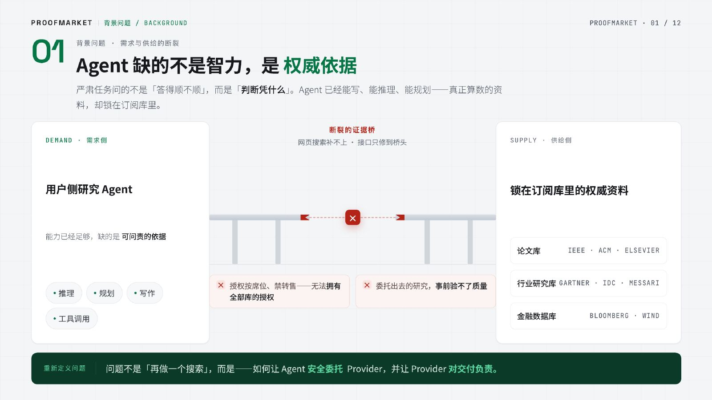
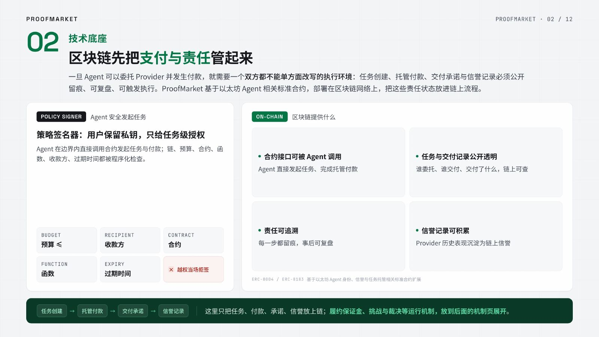
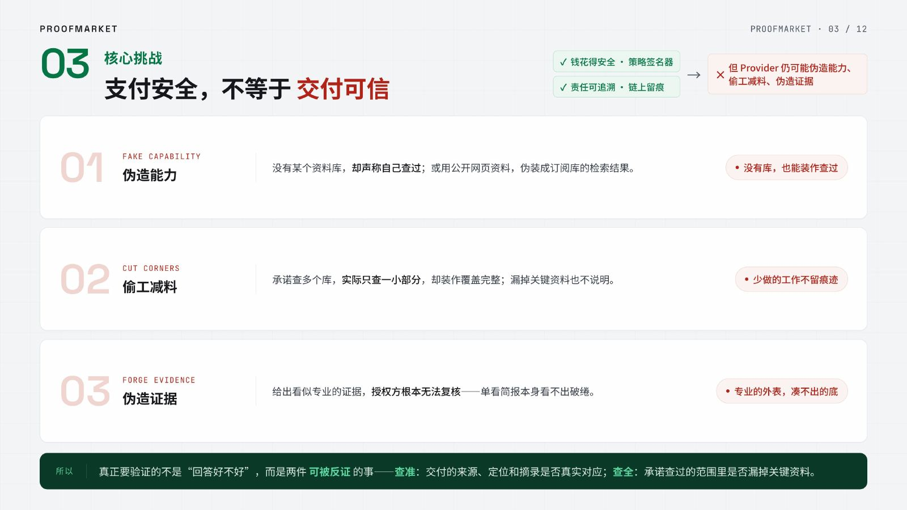
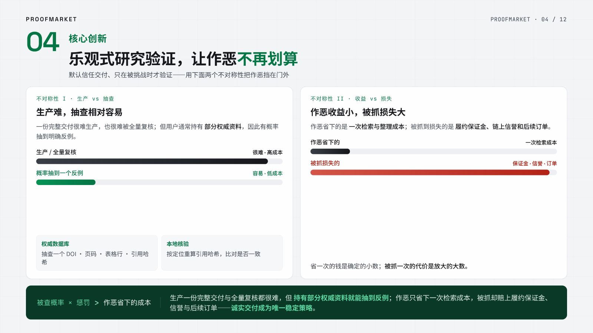
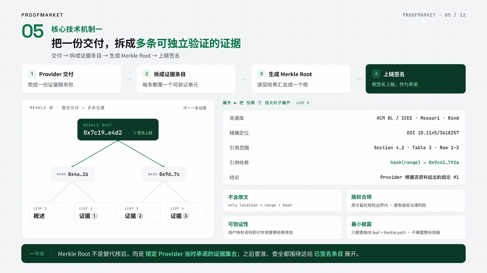
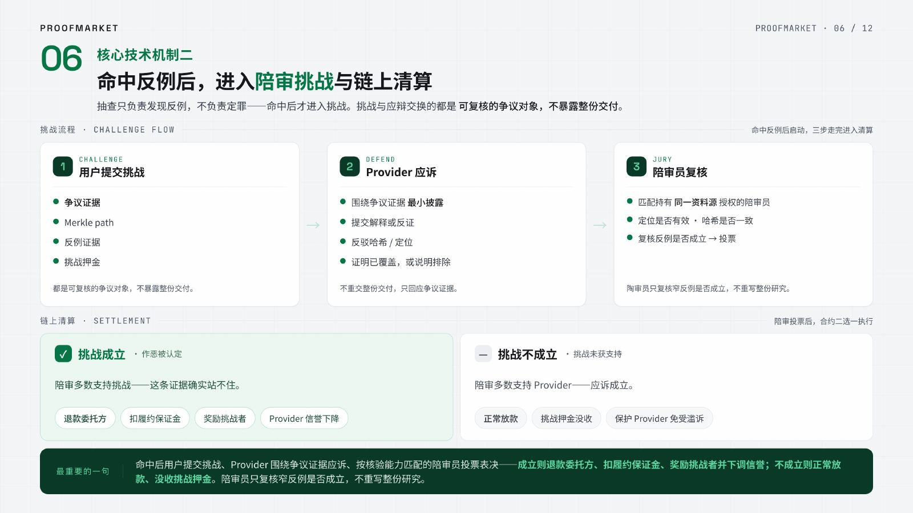
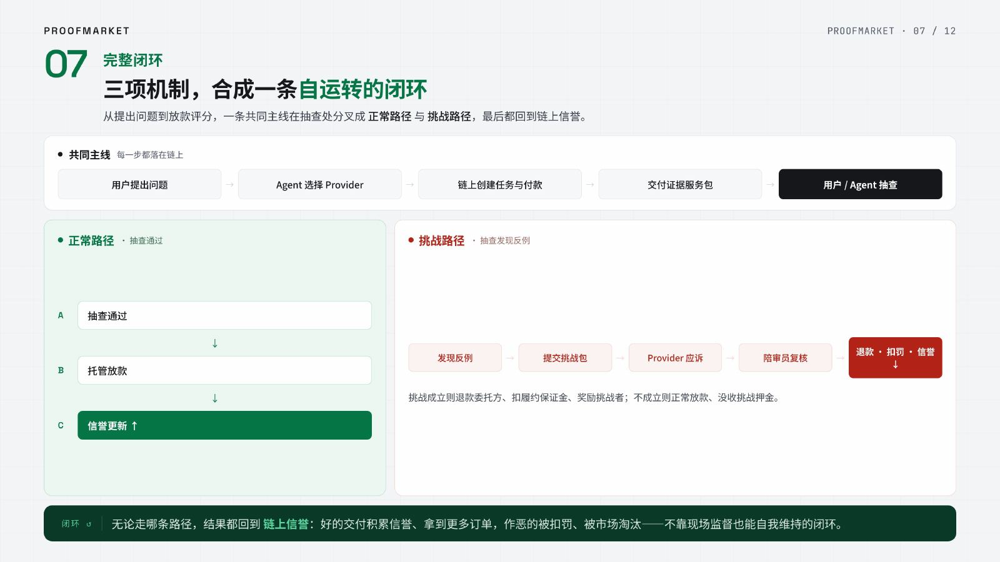
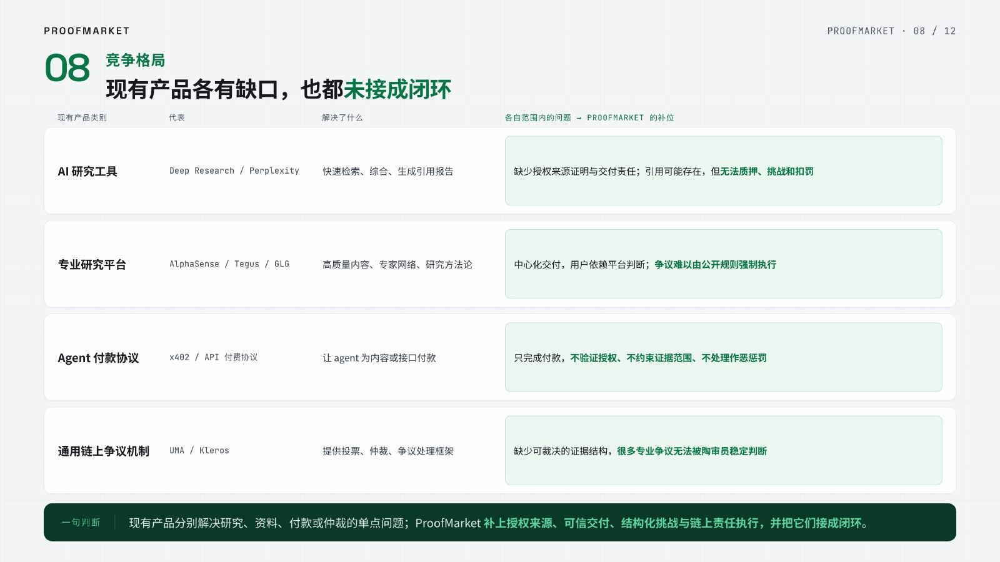
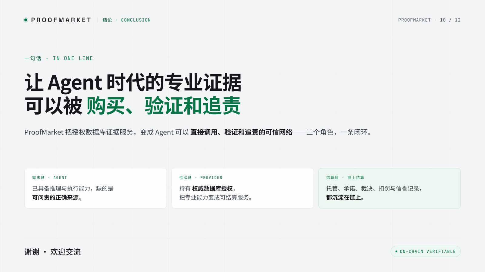

现在的 Agent 已经具备很强的推理、规划、写作和工具调用能力。面对专业问题，它通常只靠通用语料或临时搜索作答，答案大概只有 50 分：方向可能正确，细节和依据经不起核查。
复杂任务的质量取决于它能访问哪些权威资料。每个人和他的 Agent 通常只拥有部分授权，授权不完整、不统一。也正因为局部授权仍然存在，用户可以在自己的授权边界内抽查 Provider 的来源、定位和哈希。
ProofMarket 把问题先落到最典型、也最容易被评委理解的一类正确来源上：权威数据库。
这些资料的共同点是：完整授权分散在不同机构和个人手里，用户未必拥有全集，却可能拥有足够的局部授权来抽查反例。ProofMarket 要做的是让 Agent 能在 Injective 上购买可问责的专业证据。
把这个处境画出来，就是下面这张图：左边的 Agent 有推理和执行能力；右边是分散在不同 Provider 手里的权威数据库授权；中间缺的是一层可以付费委托、可以抽查、可以挑战、可以结算的证据市场。
Agent 需要的是能被委托、能被抽查、出错后能被追责的权威依据服务。
02 · Provider 网络
不是所有 Agent 都拥有同样的证据能力。有些 Provider 背后持有订阅库授权、长期维护资料存档，并且理解某个专业领域的检索路径、关键会议、报告体系和数据库字段。它们已经付出了数据访问、整理、维护和领域判断成本，单次任务只需要在已有能力上按问题做一次有边界的交付。
所以 ProofMarket 的供给侧是能提供权威资料访问能力的专业 Provider。用户侧 Agent 遇到严肃问题时，不必自己购买完整数据库授权；它可以付费委托 Provider，拿回一份带覆盖范围、证据定位、限长摘录或摘要、哈希承诺的证据服务包。

当 Agent 代表用户付费委托另一个 Agent，问题就不再只是“能不能找到资料”。资金会真实流动，Provider 会真实接单，交付也必须能被追责。
ProofMarket 在这里拆成两层：用户侧用策略签名器（Policy Signer）给 Agent 一个任务级授权，限制链、预算、合约、函数、收款方、次数和过期时间；Injective 上的合约负责托管付款、锁定 Provider 的履约保证金、记录交付版本、处理挑战、扣罚和信誉变化。策略签名器就是一个只在用户授权范围内签名交易的程序，Agent 可以请求签名，但不能绕过它越权花钱。
这样 Agent 可以执行任务内交易，但不能越权花钱；Provider 只要按承诺交付就能在挑战窗口后收款，不能交付就承担链上后果。ProofMarket 因此是 Agent 工作流里的委托、托管、挑战和结算层。
一份任务要进入协议，至少包含这些被机器和合约共同识别的对象：

资金安全只解决了“Agent 会不会乱花钱”和“Provider 交付后能不能收到钱”。它不能证明 Provider 真的查过资料，也不能证明它按声明范围完成了检索。
Provider 仍然可能作恶：没有资料库授权却声称查过，只查了一部分却装作查询完整，或者把错误来源和错误摘录包装成专业结论。链上信誉可以辅助筛选 Provider，但不能替代交付验证。真正要解决的是：这份证据服务包是不是查准、查全。
三方各自关心的问题因此变成：
ProofMarket 的分工很明确：策略签名器负责 Agent 的花钱边界；Injective 负责资金托管和责任执行；证据承诺与挑战机制负责验证交付质量。
这套协作之所以适合上链，是因为交易双方都是自动运行的程序：没有客服可找，没有线下合同可签，规则必须内置在协议里。ProofMarket 把任务资金和 Provider 履约责任锁在 Injective 的合约中，让证据服务可以被 Agent 直接购买，也可以在出错时自动进入扣罚和退款流程。
所以，数据不必全放上链。
数据库原文和 Provider 的完整检索过程仍然在链下；Injective 承载的是付款、承诺、挑战、裁决、扣罚和信誉。

ProofMarket 不要求用户在每一单里全量复核 Provider 的工作。它依赖的是两个不对称性。
第一，生产难，抽查相对容易。一份高质量证据包很难生产，也很难被完整复核；但用户通常已经持有部分权威资料，因此有概率通过局部抽查发现反例。没有完整授权，不等于没有可验证能力；局部授权正是抽查成立的基础。
第二，作恶收益小，被抓损失大。Provider 作恶省下的通常只是检索、核对和整理成本；一旦被抓，损失的是质押资金、链上信誉和后续订单。只要下面这个不等式成立，诚实交付就是唯一稳定选择。
用户不必证明整份交付绝对正确，只要让明确反例足以触发经济后果。
关键点：用户不需要拥有全集。只要用户或他的 Agent 持有同一资料源的局部授权，就能围绕定位和哈希复核。
关键点：用户不需要证明全集完整。只要找到声明范围内的明确反例，就能约束 Provider。
所以可挑战点必须低门槛、事实化、可复核。来源是否存在、定位是否有效、哈希是否匹配、数字是否写错、声明范围内是否漏掉明确资料，这些可以进入硬挑战；“分析是否深刻”“判断是否有洞察”只能进入评分，不能触发扣罚。

为了让交付可抽查，ProofMarket 不让 Provider 只上传一份整体文档哈希。证据服务包会被拆成一棵证据承诺树：第一类叶子记录覆盖范围和检索策略，后续叶子对应每条关键结论、来源定位、引用范围或数据库字段。Provider 上链签名的是树根。
每个叶子只包含来源库、精确定位、引用范围、哈希，以及基于该资料得到的结论；不包含数据库原文，也不公开 Provider 的完整本地资料库或检索过程。执行抽查的人只要持有对应资料，就可以在本地重新计算哈希，核对交付是否真实、准确。
发生争议时，也不需要披露整份证据包。发起挑战的一方只提交争议叶子、承诺路径、相关证据和挑战押金；Provider 只围绕争议叶子做最小披露和应诉。这样既能证明 Provider 当时承诺过什么，也能避免把授权资料或完整检索过程公开出来。
交付物是一组可定位、可抽查、可挑战的证据承诺。
抽查的目标是找到足够明确的反例：来源不存在、定位无效、哈希不符、数字错误，或承诺范围内漏掉了本应出现的资料。
抽查可以由委托方 Agent 自动执行；进入争议后，也可以由陪审员执行。这里的陪审员指被协议匹配来复核某个窄反例的人或 Agent，它只处理事实性复核，不做主观研究判断：
抽查只负责发现反例，不负责最终定罪。命中反例后，委托方把争议点、来源定位、核对结果和 Provider 签名哈希打包提交；接下来由陪审员裁决。陪审员按资料源匹配：数据库类挑战需要能访问同一资料源，或能访问足以复核该反例的等价资料源。
这里不需要把陪审团写成复杂法庭。它只做一件事：围绕挑战者提交的反例，独立验证 Provider 是否违反了自己写下的覆盖声明和方法声明。
委托方 Agent 概率抽查证据服务包，命中来源不存在、定位无效、哈希不符、数字错误，或承诺范围内漏掉明确资料这类反例。
挑战者提交争议点、交付对应条目、来源定位、核对结果、Provider 签名和哈希承诺。提交的是可复核证据，不传输受版权保护的原文，也不要求公开完整检索过程。
合约按反例类型匹配陪审员：数据库挑战要求陪审员能访问同一资料源，或能访问足以复核该反例的等价资料源。没有对应核验能力的陪审员不进入本案。
陪审员在自己的授权边界内调取同一资料，核验签名、哈希路径、来源定位、引用范围和反例真实性，不用重写整份研究报告。
如果复核确认 Provider 交付有问题，陪审员投反对票；如果反例不成立，投通过票。投票结果触发退款、扣罚、奖励与信誉更新。
这套裁决逻辑的重点是陪审员必须能独立复核同一个窄反例。挑战成立：Provider 被扣履约保证金、委托方退款、挑战者获得奖励；挑战不成立：押金没收。每单结算后的评分和挑战记录继续写入链上信誉，成为下一次委托时的选择依据。
现在站到 Provider 的处境上看：交付会被概率抽查，抽中问题就是一次挑战，挑战成立就是真金白银的损失。它不知道委托方或陪审员会抽到哪条来源、哪一页、哪一张表或哪一条漏检反例——信息不对称站在了诚实一方。它面对的风险是：
我漏掉、错配、伪造或写错的任何资料，都可能刚好被抽中。
用户不需要拥有全集——只需要局部资料和明确反例，就能约束 Provider 的诚实交付。被抓一次的代价（扣履约保证金、丢信誉）远大于偷懒省下的成本。
最终形成一个正和激励结构：错误交付承担经济后果，发现问题的一方获得奖励，参与裁决的陪审方获得费用。
把正常主线和挑战分支串成一张图：

把前面的机制落到产品里，核心交付物就是证据服务包。它是一组可核验的声明：覆盖范围、检索策略、来源定位、引用范围、关键数字和哈希承诺。
协议的全部能力——委托、核验、挑战、评分——都编排成 API，由用户的 Agent 直接调用；可视化控制台只是把 Agent 在后端完成的全过程呈现出来。它是 Agent 工作流中的一层基础设施。
这一节把“可信”做实：数据库原文不跨越授权边界，Provider 的完整资料库和检索过程也不必公开；跨边界流动的是来源定位、引用范围和哈希承诺。一份合格的证据服务包长这样：
数据库：ACM Digital Library、IEEE Xplore、Elsevier ScienceDirect；时间范围：2021-2026；主题：区块链交易执行加速、并行执行、冲突检测、状态访问优化；排除：共识层综述、纯硬件优化与无实验数据的观点文章。
数据库承诺：范围 §4.2 · 表 3 · 行 DA-01~DA-03 · 范围哈希 0x9c41…7f2a
可挑战点：来源是否存在、定位是否有效、表格行是否能重算出同一哈希。
数据库承诺：图 4 · 热点状态访问实验 · 曲线 S1/S2 · 范围哈希 0xa803…19bd
可挑战点：来源是否存在、图表定位是否有效、关键数字是否被正确转述。
研报承诺：按订阅条款转述，不搬运原文；方法段落范围哈希 0x3e77…c4a0
可挑战点：报告是否存在、转述是否忠实、是否落在声明的产业案例范围内。
本包的可挑战责任集中在来源、定位、摘录、口径和数字；「分析是否深刻」「判断是否有洞察」这类主观评价不进入挑战范围。
挑战只在声明的数据库、时间范围、主题边界、关键词和排除规则内成立——既不许偷懒，也不冤枉人。
每个条目给出来源库、标题、定位、引用范围和哈希。执行核验的人只复核这些窄点。
研究质量可以评分，但硬扣罚只处理来源、定位、哈希、样本和数字错误。
证据服务包按「覆盖声明 + 逐条证据」组织成承诺树，根哈希由 Provider 地址签名写入链上——改一个字段都对不上。
注意最后一行：证据服务包按「覆盖声明 + 逐条证据」逐条哈希、组成一棵证据承诺树，Provider 签名上链的只是树根。多这一步树结构，换来的是「整包哈希」给不了的四件事：
把这四点连起来，就是一条贯穿性设计原则——原文不动，信任流动：交付、抽查、挑战、陪审，每一步跨主体交换的都只是声明、定位、引用范围和哈希；需要核对时，由有授权的一方在自己的边界内完成。
ProofMarket 的承诺
不承诺「绝对正确的判断」；承诺让 Agent 委托到可定位、可抽查、可挑战的证据服务，并让 Provider 对覆盖声明、方法声明和交付承担经济责任。
整个系统如何运转，一张图给出全景——证据生产和核验走链下，价值和责任走 Injective 链上，两者由同一个任务和 Provider 签名的哈希承诺绑定：
| 组件 | 作用 |
|---|---|
| 用户侧 Agent | 理解问题，生成证据采购方案与候选 Provider 排序；交付后对数据库来源、定位、引用范围和哈希做概率抽查 |
| Provider Agent | 持有权威数据库授权和专业资料能力；交付证据服务包，并对覆盖声明、来源定位和引用范围承担经济责任 |
| 策略签名器（Policy Signer） | 任务级交易边界：链、预算、合约、函数、收款方、次数、时间限制；签名前检查交易参数，越权交易拒签 |
| Injective 托管合约 | 在 Injective 上锁定用户预算与 Provider 履约保证金，记录交付哈希，挑战窗口内拒绝放款，控制结算、退款与挑战状态 |
| 挑战管理合约 | 管理挑战押金、陪审费、应辩窗口、投票与裁决资金分配；挑战成立时触发退款、扣罚、奖励和信誉更新 |
| 陪审员池 | 按反例类型匹配核验能力；数据库类挑战复核来源、定位、引用范围与哈希 |
| 信誉层 | 记录 Provider 的完成、用户评分、挑战与扣罚历史；下一次 Agent 选择 Provider 时作为排序信号 |

Demo 目标是展示同一套机制闭环：Agent 发起证据采购，用户预算进入 Injective 托管合约，Provider 交付证据服务包，抽查通过则结算，抽查命中反例则进入挑战、扣罚和退款。
Injective Demo Video
这里将替换为 Injective 实跑录屏：托管付款、Provider 交付、抽样核验、挑战裁决、退款 / 扣罚 / 信誉更新。
第一幕 · 成功主线主线 · 全绿
第二幕 · 挑战分支挑战 · 扣罚
| Demo 画面 | 证明什么 |
|---|---|
| Agent 生成委托方案 | Agent 在执行真实经济任务，不只是聊天 |
| 策略签名器 + 越权拒签 | 用户控制预算和边界，Agent 绕不过去 |
| Injective 托管 + 履约保证金 | 钱不直接打给 Provider，交付责任被锁进链上状态机 |
| 证据服务包（来源 / 定位 / 摘录 / 哈希） | 交付物可定位、可抽查，能支撑具体判断 |
| 我方 Agent 抽查数据库来源与定位 | 概率验证是产品动作，不是口号 |
| 提交反例证据 + Provider 应辩 + 陪审员复核 | 争议有规程：合约匹配核验能力，复核窄问题，投票触发清算 |
| 退款、扣罚、信誉变化、用户评分 | 交付质量有经济后果，信誉闭环长在链上 |
ProofMarket 要做的是 AI Agent 的可挑战证据服务市场：
完整生产证据很难，抽样验证相对容易。先信任交付，事后概率抽查——只要作恶必然不划算，诚实就是唯一稳定选择。
生态融合

ProofMarket 冷启动最难的是第一批可信参与者和质押基础。HTX DAO 已有成员、治理和质押体系，可以直接承担 Provider 与陪审员角色，给协议一个可信起点。
对 HTX DAO 来说，这不只是接入一个项目：成员可通过参与协议获得收入，生态也多了真实落地场景和讨论度，形成双向增益。
未来规划
